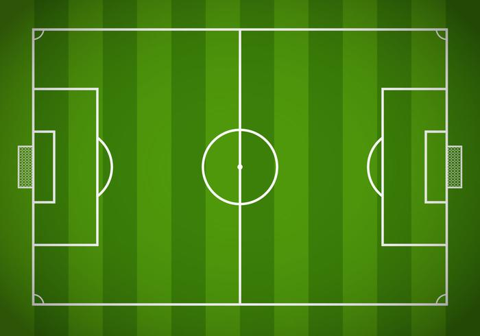

¿Qué es el fútbol?
Es un deporte de equipo jugado entre dos conjuntos de once
jugadores cada uno, mientras los árbitros se ocupan de que las
normas se cumplan correctamente.
El terreno de juego es rectangular de césped natural o artificial,
con una portería o arco a cada lado del campo. Se juega mediante
una pelota que se debe desplazar a través del campo con cualquier
parte del cuerpo que no sean los brazos o las manos, y
mayoritariamente con los pies (de ahí su nombre).
El equipo que logre más goles al cabo del partido, de una duración
de 90 minutos, es el que resulta ganador del encuentro.
Campo de juego
El fútbol se juega en un terreno de césped natural o artificial de
forma rectangular. Las medidas permitidas del terreno son de 90 a
120 metros de largo y de 45 a 90 metros de ancho, pero para partidos
internacionales se recomiendan las siguientes medidas: entre 100 y
110 metros de largo, y entre 64 y 75 metros de ancho. Las dos líneas
ubicadas a lo largo del terreno reciben el nombre de líneas
laterales o de banda, mientras que las otras son llamadas líneas de
meta o finales. Los puntos medios de cada línea de banda son unidos
por otra línea, la línea media.
Sobre el centro de cada línea de meta y adentrándose en el terreno,
se ubican las áreas penales, las áreas de meta y las metas o
porterías. Las llamadas metas, también conocidas como porterías o
arcos, constan de dos postes verticales (conocidos como palos o
verticales) de 2,44 metros de alto ubicados a 7,32 metros de
separación y sobre el centro de cada línea de meta. Las partes
superiores de los postes son unidas por otro poste horizontal,
conocido como travesaño o larguero.
Las áreas penales son áreas rectangulares ubicadas en el centro de
las metas y adentrándose en el terreno. Estas se trazan a 16,5
metros de los postes verticales, adentrándose también 16,5 metros
hacia el interior del terreno, y luego uniéndose por otra línea
mayor. El trazado del área de meta es igual, pero utilizando una
medida de 5,5 metros.
